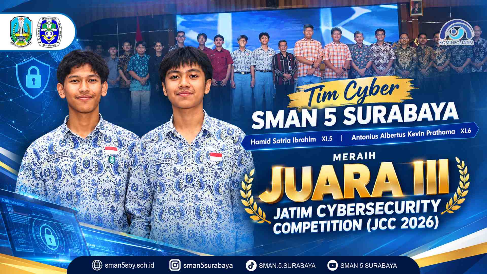
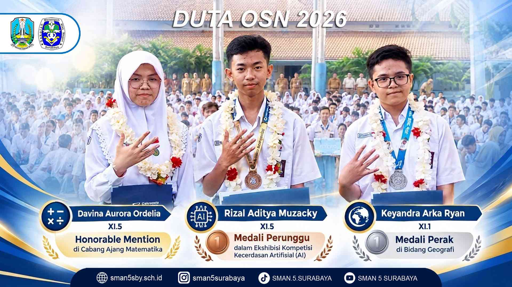
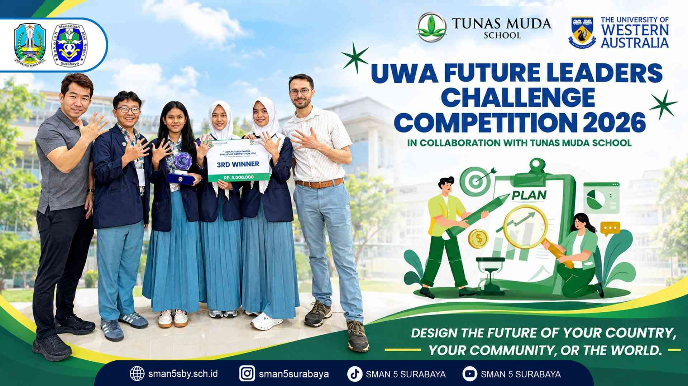
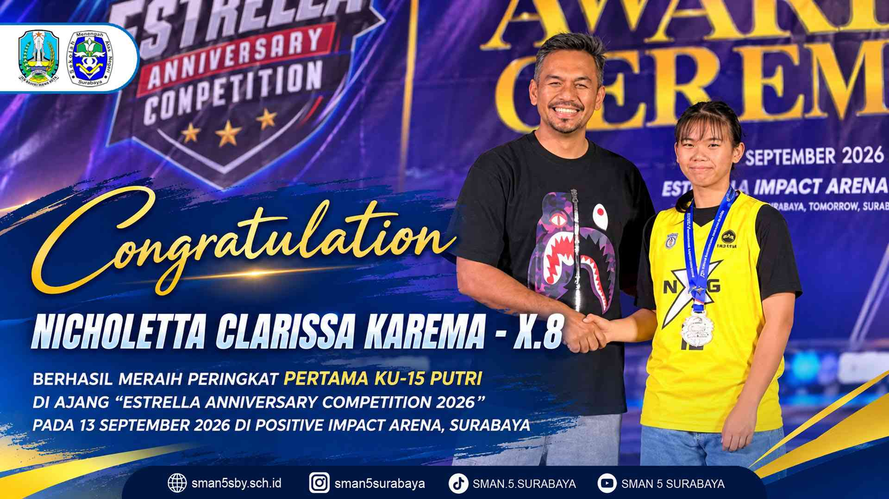
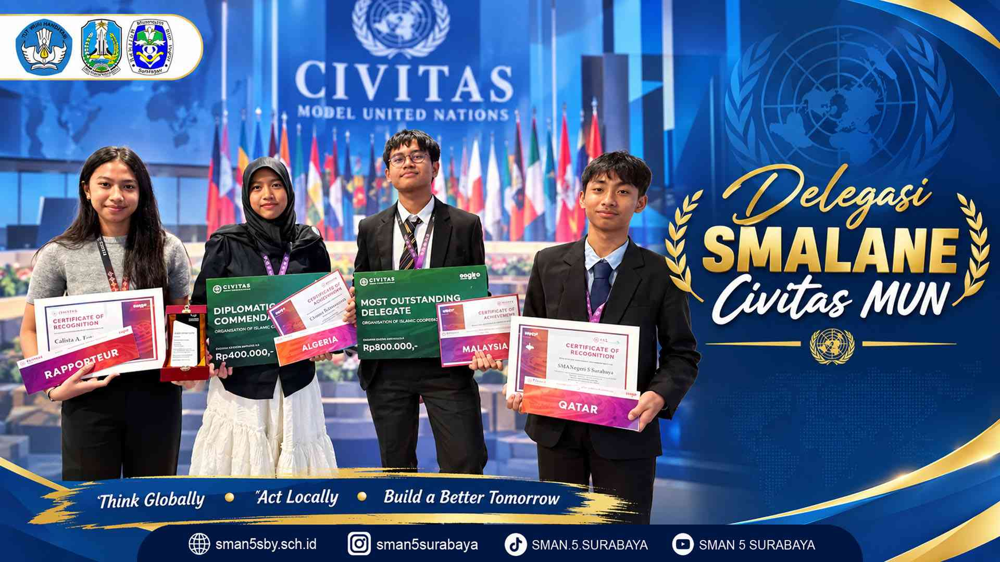

Prestasi SMA Negeri 5 Surabaya
Berbagai pencapaian siswa dalam bidang akademik, teknologi, olahraga, dan kegiatan internasional.

Juara III Jatim Cybersecurity Competition 2026
Hamid Satria Ibrahim dan Antonius Albertus Kevin Prathama meraih Juara III dalam kompetisi keamanan siber tingkat Jawa Timur.

Tiga Siswa Berprestasi di OSN Dikmen 2026
Siswa SMAN 5 Surabaya meraih penghargaan pada bidang Matematika, kecerdasan artifisial, dan Geografi.

Juara Ketiga UWA Future Leaders Challenge 2026
Tim siswa meraih posisi ketiga dalam kompetisi Future Leaders Challenge yang berkolaborasi dengan Tunas Muda School.

Nicholetta Clarissa Karema Juara Pertama KU-15 Putri
Nicholetta Clarissa Karema dari kelas X.8 meraih peringkat pertama di Estrella Anniversary Competition 2026.

Delegasi SMALANE di Civitas Model United Nations
Delegasi SMA Negeri 5 Surabaya mengikuti Civitas MUN dan membawa pulang sejumlah penghargaan.